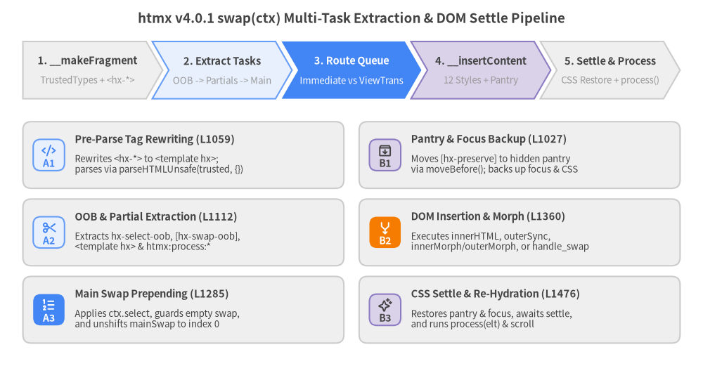
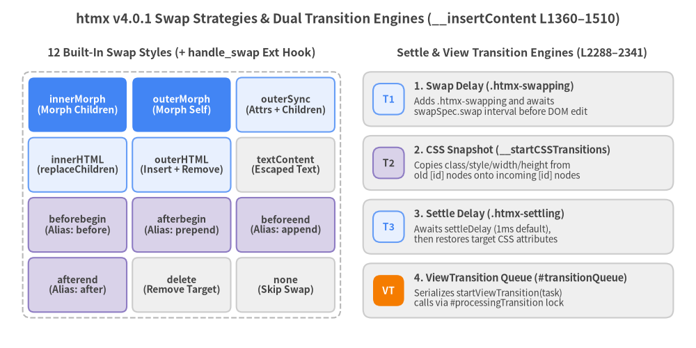
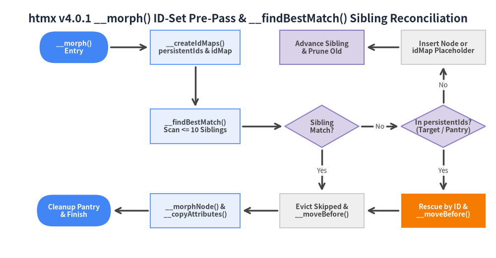

5. Swap, Settle & Morph Engine
Once the fetch() pipeline resolves the response payload and applies status-code overrides, Htmx.prototype.swap(ctx) (src/htmx.js L1267–1326) orchestrates HTML fragment parsing, <hx-*> template rewriting, multi-task extraction (main, oob, and partial), DOM insertion or Idiomorph-style tree reconciliation, CSS settle transitions, and serialized View Transitions.

Source Code
from drawlib.canvas import save, setup
from drawlib.icons import phosphor
from drawlib.smartarts import CardList, ChevronProcess
from drawlib.styles import Styles
from drawlib.text import text
setup(width=184, height=96)
text(
(92, 91),
"htmx v4.0.1 swap(ctx) Multi-Task Extraction & DOM Settle Pipeline",
style=Styles.DarkBold.patch(text_size=13.5),
)
# Top: 5-Stage End-to-End Swap & Settle Pipeline
stages = ChevronProcess(
style=Styles.Neutral,
text_style=Styles.DarkBold.patch(text_size=10.5),
description_style=Styles.Muted.patch(text_size=9.5),
corner_angle=60.0,
spacing=1.6,
flat_left_end=True,
)
stages.add("1. __makeFragment", description="TrustedTypes + <hx-*>")
stages.add("2. Extract Tasks", description="OOB -> Partials -> Main", style=Styles.PrimaryNeutral)
stages.add(
"3. Route Queue",
description="Immediate vs ViewTrans",
style=Styles.PrimaryFlat,
text_style=Styles.WhiteBold.patch(text_size=10.5),
description_style=Styles.White.patch(text_size=9.5),
)
stages.add("4. __insertContent", description="12 Styles + Pantry", style=Styles.SecondaryNeutral)
stages.add("5. Settle & Process", description="CSS Restore + process()")
stages.draw(xy=(6.0, 70.0), width=172.0, height=15.0)
# Bottom-Left: Phase A — Fragment Parsing & Task Ordering
col_left = CardList(
style=Styles.Neutral,
text_style=Styles.DarkBold.patch(text_size=10.5),
description_style=Styles.Dark.patch(text_size=9.5),
badge_shape="rounded_rect",
badge_style=Styles.PrimaryNeutral,
badge_text_style=Styles.PrimaryBold.patch(text_size=10.0),
icon_style=Styles.PrimaryBold,
direction="vertical",
spacing=2.8,
)
col_left.add(
"Pre-Parse Tag Rewriting (L1059)",
"Rewrites <hx-*> to <template hx>;\nparses via parseHTMLUnsafe(trusted, {})",
badge_text="A1",
icon=phosphor.code,
)
col_left.add(
"OOB & Partial Extraction (L1112)",
"Extracts hx-select-oob, [hx-swap-oob],\n<template hx> & htmx:process:*",
badge_text="A2",
icon=phosphor.scissors,
)
col_left.add(
"Main Swap Prepending (L1285)",
"Applies ctx.select, guards empty swap,\nand unshifts mainSwap to index 0",
badge_text="A3",
icon=phosphor.list_numbers,
badge_style=Styles.PrimaryFlat,
badge_text_style=Styles.WhiteBold.patch(text_size=10.0),
icon_style=Styles.WhiteBold,
)
col_left.draw(xy=(6.0, 6.0), width=84.0, height=58.0)
# Bottom-Right: Phase B — DOM Mutation, Pantry & Settle
col_right = CardList(
style=Styles.Neutral,
text_style=Styles.DarkBold.patch(text_size=10.5),
description_style=Styles.Dark.patch(text_size=9.5),
badge_shape="rounded_rect",
badge_style=Styles.SecondaryNeutral,
badge_text_style=Styles.DarkBold.patch(text_size=10.0),
icon_style=Styles.DarkBold,
direction="vertical",
spacing=2.8,
)
col_right.add(
"Pantry & Focus Backup (L1027)",
"Moves [hx-preserve] to hidden pantry\nvia moveBefore(); backs up focus & CSS",
badge_text="B1",
icon=phosphor.archive_box,
)
col_right.add(
"DOM Insertion & Morph (L1360)",
"Executes innerHTML, outerSync,\ninnerMorph/outerMorph, or handle_swap",
badge_text="B2",
icon=phosphor.arrows_merge,
badge_style=Styles.AccentFlat,
badge_text_style=Styles.WhiteBold.patch(text_size=10.0),
icon_style=Styles.WhiteBold,
)
col_right.add(
"CSS Settle & Re-Hydration (L1476)",
"Restores pantry & focus, awaits settle,\nand runs process(elt) & scroll",
badge_text="B3",
icon=phosphor.sparkle,
)
col_right.draw(xy=(94.0, 6.0), width=84.0, height=58.0)
save()
1. HTML Parsing, <hx-*> Rewriting & Pantry Preservation
Before any DOM nodes are inspected or inserted, htmx transforms raw response strings into a sanitized, inert DocumentFragment while protecting table-nested hypermedia tags and active multimedia elements (src/htmx.js L1027–1090, L1232–1245).
1.1 Trusted Types & Document.parseHTMLUnsafe (__parseHTML)
__parseHTML(resp) (L1053–1057) passes the response string through this.#ttPolicy.createHTML(resp) (which defaults to an identity passthrough { createHTML: s => s, createScript: s => s } at L140 unless replaced by hx-csp via #internalAPI.initSecurity) and invokes the modern Document.parseHTMLUnsafe API with a fallback to DOMParser:
// src/htmx.js L1053–1057
__parseHTML(resp) {
let trusted = this.#ttPolicy.createHTML(resp);
// {} works around Chrome 150-156 dropping comments :/
return Document.parseHTMLUnsafe?.(trusted, {}) || new DOMParser().parseFromString(trusted, 'text/html');
}
Passing an empty options object {} as the second argument to Document.parseHTMLUnsafe(trusted, {}) specifically works around a Chromium 150–156 regression where calling parseHTMLUnsafe(html) with a single argument silently stripped HTML comment nodes.
1.2 Pre-Parse <hx-*> to <template hx> Rewriting (__makeFragment)
Standard HTML5 tree construction applies strict foster-parenting rules inside table contexts (<table>, <thead>, <tbody>, <tr>): custom elements such as <hx-partial> or <hx-upsert> placed directly inside a <tr> would be hoisted outside the <table> by the browser's HTML parser if parsed directly. Conversely, <template> elements are permitted anywhere in the HTML5 content model, including directly inside <table> and <tr>.
To prevent foster-parenting while keeping server markup ergonomic, __makeFragment(text) (L1059–1090) rewrites every <hx-([a-z]+)> tag into <template hx type="$1"> via regular expression before invoking __parseHTML:
// src/htmx.js L1059–1090
__makeFragment(text) {
// Convert <hx-*> tags (e.g. <hx-partial>, <hx-oob>) to <template hx type="*">
let response = text.replace(/<hx-([a-z]+)(\s+|>)/gi, '<template hx type="$1"$2')
.replace(/<\/hx-[a-z]+>/gi, '</template>');
let title = '';
response = response.replace(/<head(\s[^>]*)?>[\s\S]*?<\/head>/i, m => (title = this.__parseHTML(m).title, ''));
let startTag = response.match(/<([a-z][^\/>\x20\t\r\n\f]*)/i)?.[1]?.toLowerCase();
let doc, fragment;
if (startTag === 'html' || startTag === 'body') {
doc = this.__parseHTML(response);
fragment = document.createDocumentFragment();
fragment.append(doc.body);
} else {
doc = this.__parseHTML(`<template>${response}</template>`);
fragment = doc.querySelector('template').content;
}
if (!title) {
let titleElt = fragment.querySelector('title:not(svg title)');
if (titleElt) {
title = titleElt.textContent;
titleElt.remove();
}
}
this.__processScripts(fragment);
return { fragment, title };
}
Key mechanics inside __makeFragment(text):
<head>Stripping & Title Extraction (L1063,L1076–1082): If the response contains a<head>...</head>block, htmx parses it in isolation to extract.titleand strips the<head>block fromresponse(note that thehx-headextension intercepts<head>earlier inhtmx_before_responsewhen loaded). If no<head>was present, htmx queriestitle:not(svg title)inside the parsed fragment, extracts itstextContent, and removes the<title>element so it does not pollute the swapped body DOM.- Full-Document vs.
<template>Envelope (L1064–1074): If the first tag inresponseis<html>or<body>, htmx parses a full document and appendsdoc.bodyinto a freshDocumentFragment(preserving theBODYwrapper so__insertContentcan inspect<body>attributes). Otherwise, it wraps the markup in<template>${response}</template>so arbitrary top-level fragments (<tr>,<td>,<option>,<colgroup>) parse cleanly without a surrounding<body>. - Executable Script Re-Creation (
__processScriptsL1232–1245):<script>elements created viaDOMParseror<template>parsing have their internal already started flag set by the browser and will not execute when inserted into the document.__processScripts(container)iterates over every<script>, allocates a freshdocument.createElement('script'), copies all attributes, stampsnewScript.nonce = this.config.inlineScriptNonceif configured, assignsnewScript.textContent = this.#ttPolicy.createScript(oldScript.textContent), and replaces the inert script node in place. Note that__processScriptsis called both on the top-levelfragment(L1084) and on each<template hx type="partial">content tree (L1163).
1.3 Atomic Pantry Preservation ([hx-preserve])
Elements marked with hx-preserve (such as playing <video>, <audio>, <iframe>, or WebGL <canvas> nodes) must survive innerHTML and outerHTML replacements without detaching from the live document tree, because removing an element from the document immediately resets iframe browsing contexts and media playback.
htmx solves this in __handlePreservedElements(fragment) and __restorePreservedElements(pantry) (L1027–1051) by combining a hidden pantry <div> inserted adjacent to document.body with atomic this.__moveBefore() relocation:
// src/htmx.js L1027–1051
__handlePreservedElements(fragment) {
let pantry = document.createElement('div');
pantry.hidden = true;
document.body.insertAdjacentElement('afterend', pantry);
let newPreservedElts = fragment.querySelectorAll?.(this.__prefixSelector('[hx-preserve]')) || [];
for (let preservedElt of newPreservedElts) {
let currentElt = document.getElementById(preservedElt.id);
if (currentElt) {
this.__moveBefore(pantry, currentElt, null);
}
}
return pantry;
}
__restorePreservedElements(pantry) {
for (let preservedElt of [...pantry.children]) {
let newElt = document.getElementById(preservedElt.id);
if (newElt) {
this.__moveBefore(newElt.parentNode, preservedElt, newElt);
this.__cleanup(newElt);
newElt.remove();
}
}
pantry.remove();
}
Because pantry is connected to the live Document (document.body.insertAdjacentElement('afterend', pantry)), moving currentElt into pantry via Node.prototype.moveBefore() before the swap and moving it back before the placeholder newElt afterward keeps the node continuously connected with zero state loss.
2. Multi-Task Swap Pipeline (swap(ctx))
swap(ctx) (L1267–1326) decomposes a single response fragment into an ordered array of discrete swap tasks ({ type, fragment, target, swapSpec, sourceElement }).
2.1 Extraction Order vs. Execution Order
A critical nuance of swap(ctx) is that out-of-band and partial tasks must be extracted from fragment first (mutating fragment by removing extracted subtrees), whereas the main swap executes first:
| Step | Method (src/htmx.js) |
Extraction Mechanics | Final Position in tasks[] |
|---|---|---|---|
| 1. OOB Extraction | __processOOB (L1112–1133) & __createOOBTask (L1092–1110) |
Runs hx-select-oob selectors against fragment first (each comma-separated token splits on :(.*) into [selector, oobValue = 'true']), then queries [hx-swap-oob]. Removes each matched elt from fragment after cloning it into one { type: 'oob' } task per resolved target. |
Appended first (tasks.push(...oobTasks)) $\rightarrow$ executes 2nd (after mainSwap). |
2. Partial & <hx-*> Extraction |
__processPartials (L1154–1184) |
Queries template[hx]. For type === 'partial', runs __processScripts(templateElt.content), parses hx-swap, resolves hx-target (or #${CSS.escape(templateElt.id)}), and pushes { type: 'partial' } tasks. For any other type (e.g. <hx-upsert>), fires htmx:process:${type} ({ ctx, tasks }) for extensions. Removes templateElt. |
Appended second (tasks.push(...partialTasks)) $\rightarrow$ executes 3rd. |
| 3. Main Swap Construction | __processMainSwap (L1328–1358) |
Inspects what remains in fragment after OOB and partial removal. Applies ctx.select if set, defaults `swapSpec.show |
In __createOOBTask (L1092–1110), htmx supports both legacy swapStyle:selector syntax (matched when there is no whitespace before the colon via /^(\S+):(.+)/) and HCON swap specs (innerHTML target:#sidebar). Furthermore, swapSpec.strip ??= !swapSpec.style.startsWith('outer') automatically unwraps the outer OOB element wrapper when using non-outer* swap styles like innerHTML or beforeend.
2.2 Empty Main Swap Suppression (hasPartials & swapEmpty)
When a server responds with only <hx-partial> or [hx-swap-oob] elements (plus surrounding whitespace), developers almost never want the leftover whitespace to wipe out the primary hx-target. __processMainSwap (L1280, L1334–1339) guards against accidental empty swaps using hasPartials:
// src/htmx.js L1280
let hasPartials = partialTasks.length || (oobTasks.length && !this.config.allowEmptySwapAfterOOB);
// src/htmx.js L1334–1339 (inside __processMainSwap)
if (
swapSpec.style === 'delete' || // delete always runs regardless of content
(fragment.querySelector('body') || fragment).childElementCount > 0 || // or fragment has elements
fragment.textContent.trim() || // or fragment has text
(swapSpec.swapEmpty ?? !hasPartials)
) { ... }
Thus, an empty remaining fragment is skipped whenever <hx-partial> tasks exist, or whenever oobTasks exist (unless htmx.config.allowEmptySwapAfterOOB === true or the swapEmpty:true modifier is explicitly set on hx-swap). Notably, streaming extensions (hx-sse.js L311 and hx-ws.js L448) append swapEmpty:false automatically so empty messages or OOB-only frames never blank the stream container.
2.3 History Update & View Transition Task Splitting
After constructing tasks, swap(ctx) (L1288–1325):
- Fires
htmx:before:swapwith{ ctx, tasks }(L1288). Extensions such ashx-targets(src/ext/hx-targets.jsL20–43) intercept this event to splice themaintask into multiple target tasks, or cancel the swap entirely by returningfalse. - Invokes
this.__handleHistoryUpdate(ctx)(L1292,L1699–1719), which first stampshistory.replaceState({htmx: true}, '', location.href)on the initial page entry so back-button traversals are interceptable, resolvespushorreplaceURLs (HX-Push-Url,HX-Replace-Url,hx-push-url,hx-replace-url, orhx-boostdefault), and fireshtmx:before:history:update$\rightarrow$htmx:after:history:push|replace$\rightarrow$htmx:after:history:update. - Splits
tasksinto immediateswapPromisesand View TransitiontransitionTasks(L1294–1314):- Any task where
task.swapSpec?.transition ?? mainSwap?.transition ?? ctx.transitionis truthy is placed intransitionTasksand submitted as a single batched closure tothis.__submitTransitionTask(tasksWrapper, ctx)withcssTransition = false(__insertContent(task, false)). - All other tasks run
this.__insertContent(task)immediately.
- Any task where
- Awaits
Promise.all(swapPromises), re-pointsctx.sourceElement = mainSwap.targetif the original source element was replaced by anouterHTMLswap (L1316–1318), fireshtmx:after:swap, updatesdocument.title, scrolls toctx.request.anchor, and guaranteeshtmx:finally:swapinside thefinallyblock.
3. DOM Insertion, Settle & Transitions (__insertContent)
__insertContent(task, cssTransition = true) (L1360–1510) executes a single task's DOM mutation, manages focus and CSS transition snapshots, and runs the post-swap settle lifecycle.

Source Code
from drawlib.canvas import save, setup
from drawlib.smartarts import CardList, GridLayout
from drawlib.styles import Styles
from drawlib.text import text
setup(width=184, height=92)
text(
(92, 87),
"htmx v4.0.1 Swap Strategies & Dual Transition Engines (__insertContent L1360–1510)",
style=Styles.DarkBold.patch(text_size=13.5),
)
# Left: 3x4 GridLayout of the 12 Swap Styles (Bottom-Left at x=6, y=8)
text(
(48, 78),
"12 Built-In Swap Styles (+ handle_swap Ext Hook)",
style=Styles.DarkBold.patch(text_size=11.5),
)
grid = GridLayout(
num_column=3,
num_row=4,
style=Styles.Neutral.patch(shape_r=1.5),
text_style=Styles.DarkBold.patch(text_size=10.0),
)
# Row 3 (Top): Morph & Sync (v4 Flagships)
grid.add(
position=(0, 3),
width=1,
height=1,
text="innerMorph\n(Morph Children)",
style=Styles.PrimaryFlat.patch(shape_r=1.5),
text_style=Styles.WhiteBold.patch(text_size=10.0),
)
grid.add(
position=(1, 3),
width=1,
height=1,
text="outerMorph\n(Morph Self)",
style=Styles.PrimaryFlat.patch(shape_r=1.5),
text_style=Styles.WhiteBold.patch(text_size=10.0),
)
grid.add(
position=(2, 3),
width=1,
height=1,
text="outerSync\n(Attrs + Children)",
style=Styles.PrimaryNeutral.patch(shape_r=1.5),
)
# Row 2: Core Replacement
grid.add(position=(0, 2), width=1, height=1, text="innerHTML\n(replaceChildren)", style=Styles.PrimaryNeutral.patch(shape_r=1.5))
grid.add(position=(1, 2), width=1, height=1, text="outerHTML\n(Insert + Remove)", style=Styles.PrimaryNeutral.patch(shape_r=1.5))
grid.add(position=(2, 2), width=1, height=1, text="textContent\n(Escaped Text)", style=Styles.Neutral.patch(shape_r=1.5))
# Row 1: Positional Insertions (Aliases: before, prepend, append, after)
grid.add(position=(0, 1), width=1, height=1, text="beforebegin\n(Alias: before)", style=Styles.SecondaryNeutral.patch(shape_r=1.5))
grid.add(position=(1, 1), width=1, height=1, text="afterbegin\n(Alias: prepend)", style=Styles.SecondaryNeutral.patch(shape_r=1.5))
grid.add(position=(2, 1), width=1, height=1, text="beforeend\n(Alias: append)", style=Styles.SecondaryNeutral.patch(shape_r=1.5))
# Row 0 (Bottom): Afterend & Control Styles
grid.add(position=(0, 0), width=1, height=1, text="afterend\n(Alias: after)", style=Styles.SecondaryNeutral.patch(shape_r=1.5))
grid.add(position=(1, 0), width=1, height=1, text="delete\n(Remove Target)", style=Styles.Neutral.patch(shape_r=1.5))
grid.add(position=(2, 0), width=1, height=1, text="none\n(Skip Swap)", style=Styles.Neutral.patch(shape_r=1.5))
grid.draw(
xy=(6.0, 8.0),
width=84.0,
height=65.0,
margin=1.5,
outer_style=Styles.MutedDashed.patch(shape_r=2.0),
)
# Right: Dual Transition & Settle Architecture (Bottom-Left at x=96, y=8)
text(
(138, 78),
"Settle & View Transition Engines (L2288–2341)",
style=Styles.DarkBold.patch(text_size=11.5),
)
trans_cards = CardList(
style=Styles.Neutral,
text_style=Styles.DarkBold.patch(text_size=10.5),
description_style=Styles.Dark.patch(text_size=9.5),
badge_shape="rounded_rect",
badge_style=Styles.PrimaryNeutral,
badge_text_style=Styles.PrimaryBold.patch(text_size=10.0),
direction="vertical",
spacing=2.5,
)
trans_cards.add(
"1. Swap Delay (.htmx-swapping)",
"Adds .htmx-swapping and awaits\nswapSpec.swap interval before DOM edit",
badge_text="T1",
)
trans_cards.add(
"2. CSS Snapshot (__startCSSTransitions)",
"Copies class/style/width/height from\nold [id] nodes onto incoming [id] nodes",
badge_text="T2",
badge_style=Styles.SecondaryNeutral,
badge_text_style=Styles.DarkBold.patch(text_size=10.0),
)
trans_cards.add(
"3. Settle Delay (.htmx-settling)",
"Awaits settleDelay (1ms default),\nthen restores target CSS attributes",
badge_text="T3",
)
trans_cards.add(
"4. ViewTransition Queue (#transitionQueue)",
"Serializes startViewTransition(task)\ncalls via #processingTransition lock",
badge_text="VT",
badge_style=Styles.AccentFlat,
badge_text_style=Styles.WhiteBold.patch(text_size=10.0),
)
trans_cards.draw(xy=(96.0, 8.0), width=82.0, height=65.0)
save()
3.1 Swap Style Normalization, BODY Promotion & All 12 Swap Strategies
__parseSwapSpec(swapStr) (L1143–1152) splits the leading swap style token from trailing HCON modifiers (swap:100ms settle:20ms scroll:top show:#header:top transition:true strip:true focusScroll:true ignoreTitle:true swapEmpty:true) and normalizes shorthand aliases via __normalizeSwapStyle(style) (L273–278):
before$\rightarrow$beforebeginafter$\rightarrow$afterendprepend$\rightarrow$afterbeginappend$\rightarrow$beforeend
Before executing the swap, __insertContent (L1372–1380) applies automatic BODY handling and outer-element stripping:
- If
fragment.firstElementChild?.tagName === 'BODY', htmx checkskeepBody = target === document.body && swapStyle.startsWith('outer'). - When
keepBodyistrueandswapStyle === 'outerHTML', htmx promotesouterHTMLtoouterSync(L1374) because browsers forbid replacingdocument.bodyviaouterHTMLinsertion without detaching body-level listeners. - When
keepBodyisfalse,swapSpec.stripdefaults totrue, unwrapping the<body>tag so only its child nodes are inserted into the target.
| Swap Style | Implementation in __insertContent (src/htmx.js L1387–1471) |
Cleanup & Target Behavior |
|---|---|---|
innerHTML (default) |
Calls this.__cleanup(child) on all target.children, then target.replaceChildren(...fragment.childNodes) (L1413–1417). |
Preserves target element; backs up focus and runs __startCSSTransitions. |
outerHTML |
Inserts fragment before target, calls this.__cleanup(target), removes target, and updates target = newContent.find(n => n.nodeType === 1) || parentNode (L1423–1429). |
Promoted to outerSync if target === document.body. |
outerSync |
Calls this.__copyAttributes(target, fragment.firstElementChild), cleans up target.children, and runs target.replaceChildren(...fragment.firstElementChild.childNodes) (L1430–1436). |
Used by document.body swaps and hx-history-cache restores (L1656). |
textContent |
Calls this.__cleanup(child) on target.querySelectorAll('[data-htmx-powered]') and sets target.textContent = fragment.textContent (L1418–1422). |
Renders raw text without HTML interpretation. |
innerMorph |
Calls this.__morph(target, fragment, true) (L1437–1439). |
Reconciles target's children in place via the built-in Idiomorph engine. |
outerMorph |
Calls this.__morph(target, fragment, false) (L1440–1442). |
Reconciles target itself inside target.parentNode. |
beforebegin / before |
Calls this.__insertNodes(parentNode, target, fragment) (L1443–1446). |
Inserts sibling nodes immediately preceding target. |
afterbegin / prepend |
Calls this.__insertNodes(target, target.firstChild, fragment) (L1447–1449). |
Prepends nodes before target.firstChild. |
beforeend / append |
Calls this.__insertNodes(target, null, fragment) (L1450–1451). |
Appends nodes after target.lastChild. |
afterend / after |
Calls this.__insertNodes(parentNode, target.nextSibling, fragment) (L1452–1454). |
Inserts sibling nodes immediately following target. |
delete |
Awaits optional swapSpec.swap delay, runs this.__cleanup(target), removes target from target.parentNode, and returns early (L1387–1393). |
Always runs in __processMainSwap even on empty responses (L1335). |
none |
Returns immediately at L1370 before adding .htmx-swapping. |
Used by 204/304 status codes (config.noSwap) and OOB-only updates. |
Custom (handle_swap) |
Iterates this.__extMethods.get('handle_swap') (L1456–1470, e.g., upsert in hx-upsert.js). |
Throws Error('Unknown swap style: ...') if no extension returns truthy. |
3.2 Focus & Selection Restoration, CSS Transitions & Settle Lifecycle
For innerHTML and outerHTML swaps, replacing DOM nodes destroys input focus and CSS transition continuity unless state is bridged across the mutation:
- Focus & Cursor Selection Backup (
L1401–1406,L1477–1483): Ifdocument.activeElementhas anid, htmx records{ elt: activeElt, start: activeElt.selectionStart, end: activeElt.selectionEnd }. After the swap and pantry restoration, if the original element no longer matches:focus, htmx looks updocument.getElementById(focusInfo.elt.id)and calls__setFocus(newElt, { preventScroll }, focusInfo.start, focusInfo.end)(L1186–1195) to restore both keyboard focus and the exact text selection range. - Attribute-Snapshot CSS Transitions (
__startCSSTransitionsL2324–2341): WhencssTransitionis enabled andsettleDelay > 0(defaultSettleDelay: 1ms),__startCSSTransitions(fragment, target)finds all[id]elements in both the oldtargetand incomingfragmentwith matchingidandtagName. For each match, it shallow-clones the incoming element (let clone = elt.cloneNode(false)), overwrites['class', 'style', 'width', 'height']on the incomingeltwith the old element's attributes before insertion, and returns arestoreTaskclosure (() => this.__copyAttributes(elt, clone)). - The Settle Phase (
L1485–1510):- Fires
htmx:before:settle({ task, newContent, settleTasks }). - Adds
.htmx-addedto every element innewContent. - If
settleTasks.length > 0, adds.htmx-settlingtotarget, awaitsthis.timeout(settleDelay)(allowing the browser to paint one frame with the old CSS state), executes everysettleTask()to apply the newclass/style/width/heightattributes (triggering smooth CSS transitions), and removes.htmx-settling. - Fires
htmx:after:settle, removes.htmx-added, callsthis.process(elt)to wire uphx-*attributes on the newly inserted nodes, runsthis.__handleAutoFocus(elt)([autofocus]), and executesthis.__handleScroll(swapSpec, target).
- Fires
3.3 Serialized View Transitions Queue (#transitionQueue)
In the browser's View Transitions API (document.startViewTransition()), starting a new View Transition while another is active immediately aborts the running transition. In a hypermedia application where multiple independent components or streaming partials can swap concurrently, uncoordinated startViewTransition() calls cause visual flicker and aborted animations.
htmx v4 solves this with an internal FIFO promise queue (#transitionQueue and #processingTransition at L2288–2322):
// src/htmx.js L2288–2322
__submitTransitionTask(task, ctx) {
return new Promise((resolve) => {
this.#transitionQueue ||= [];
this.#transitionQueue.push({ task, resolve, ctx });
if (!this.#processingTransition) {
this.__processTransitionQueue();
}
});
}
async __processTransitionQueue() {
if (this.#transitionQueue.length === 0 || this.#processingTransition) {
return;
}
this.#processingTransition = true;
let { task, resolve, ctx } = this.#transitionQueue.shift();
try {
if (document.startViewTransition) {
let detail = {task, ctx};
this.__trigger(ctx.sourceElement, "htmx:before:viewTransition", detail);
await document.startViewTransition(detail.task).finished;
this.__trigger(ctx.sourceElement, "htmx:after:viewTransition", detail);
} else {
await task();
}
} catch (e) {
// Transitions can be skipped/aborted - this is normal
} finally {
this.#processingTransition = false;
resolve();
this.__processTransitionQueue();
}
}
Notice that detail = { task, ctx } is passed to htmx:before:viewTransition before calling document.startViewTransition(detail.task), allowing listeners or extensions to wrap detail.task (for example, setting view-transition-name properties dynamically before the old-state screenshot is captured).
4. Built-in Idiomorph-Style DOM Reconciliation Engine (__morph)
In htmx 2, DOM morphing required loading the external idiomorph library. In htmx v4.0.1, a streamlined Idiomorph algorithm is built directly into src/htmx.js (L2018–2269, ~250 lines) powering innerMorph and outerMorph.

Source Code
from drawlib import canvas
from drawlib.diagrams.flow import Decision, End, FlowDiagram, Process, Start
from drawlib.styles import Styles
canvas.clear()
canvas.setup(width=188, height=98)
flow = FlowDiagram(
node_style=Styles.Neutral,
edge_style=Styles.DarkBold,
edge_text_style=Styles.Dark.patch(text_size=9.5),
title="htmx v4.0.1 __morph() ID-Set Pre-Pass & __findBestMatch() Sibling Reconciliation",
)
nt = Styles.DarkBold.patch(text_size=10.0)
wt = Styles.WhiteBold.patch(text_size=10.0)
# Column 1 (x=24), Column 2 (x=70), Column 3 (x=118), Column 4 (x=164)
start = flow.add(
Start("__morph()\nEntry", width=26, height=12, style=Styles.PrimaryFlat, text_style=wt),
xy=(24, 76),
)
id_maps = flow.add(
Process("__createIdMaps()\npersistentIds & idMap", width=34, height=13, style=Styles.PrimaryNeutral, text_style=nt),
xy=(70, 76),
)
find_match = flow.add(
Process("__findBestMatch()\nScan <= 10 Siblings", width=34, height=13, style=Styles.PrimaryNeutral, text_style=nt),
xy=(70, 46),
)
match_dec = flow.add(
Decision("Sibling\nMatch?", width=28, height=16, style=Styles.SecondaryNeutral, text_style=nt),
xy=(118, 46),
)
rescue_dec = flow.add(
Decision("In persistentIds?\n(Target / Pantry)", width=32, height=16, style=Styles.SecondaryNeutral, text_style=nt),
xy=(164, 46),
)
insert_new = flow.add(
Process("Insert Node or\nidMap Placeholder", width=32, height=13, style=Styles.Neutral, text_style=nt),
xy=(164, 76),
)
recurse = flow.add(
Process("Advance Sibling\n& Prune Old", width=32, height=13, style=Styles.SecondaryNeutral, text_style=nt),
xy=(118, 76),
)
move_before = flow.add(
Process("Rescue by ID &\n__moveBefore()", width=32, height=13, style=Styles.AccentFlat, text_style=wt),
xy=(164, 14),
)
evict_inter = flow.add(
Process("Evict Skipped &\n__moveBefore()", width=32, height=13, style=Styles.Neutral, text_style=nt),
xy=(118, 14),
)
morph_node = flow.add(
Process("__morphNode() &\n__copyAttributes()", width=34, height=13, style=Styles.PrimaryNeutral, text_style=nt),
xy=(70, 14),
)
done = flow.add(
End("Cleanup Pantry\n& Finish", width=28, height=12, style=Styles.PrimaryFlat, text_style=wt),
xy=(24, 14),
)
# Orthogonal Non-Crossing Connections
start.connect(id_maps, start_side="right", end_side="left", padding=1.0)
id_maps.connect(find_match, start_side="bottom", end_side="top", padding=1.0)
find_match.connect(match_dec, start_side="right", end_side="left", padding=1.0)
match_dec.connect(evict_inter, label="Yes", start_side="bottom", end_side="top", padding=1.0)
match_dec.connect(rescue_dec, label="No", start_side="right", end_side="left", padding=1.0)
rescue_dec.connect(move_before, label="Yes", start_side="bottom", end_side="top", padding=1.0)
rescue_dec.connect(insert_new, label="No", start_side="top", end_side="bottom", padding=1.0)
move_before.connect(evict_inter, start_side="left", end_side="right", padding=1.0)
evict_inter.connect(morph_node, start_side="left", end_side="right", padding=1.0)
insert_new.connect(recurse, start_side="left", end_side="right", padding=1.0)
morph_node.connect(done, start_side="left", end_side="right", padding=1.0)
flow.draw(xy=(4.0, 4.0))
canvas.save()
4.1 Bottom-Up idMap & persistentIds Pre-Pass (L2229–2269)
Standard virtual-DOM diffing compares siblings purely at the current tree depth, losing state whenever a node with a stable id is wrapped inside a new container <div> or unwrapped one level up. Idiomorph solves this by computing persistent ID sets across the entire old and new trees before starting the walk:
__createPersistentIds(oldIdElements, newIdElements)(L2256–2269): Scans all[id]elements inoldNodeandnewContent. Anidis added topersistentIds: Set<string>if and only if:- It exists in both
oldNodeandnewContent, - Both elements share the exact same
tagName, and - The
idis not duplicated within eitheroldNodeornewContent(duplicateIdsare deleted atL2267).
- It exists in both
__populateIdMapWithTree(idMap, persistentIds, root, elements)(L2229–2244): For every element whoseidis inpersistentIds, htmx walks upward viacurrent = current.parentElementuntil reachingroot(oldNode.parentElementfor the old tree,newContentfor the new fragment), addingelt.idtoidMap.get(current): Set<string>at every ancestor along the path.
As a result, in O(1) time during the top-down walk, ctx.idMap.get(node) tells __findBestMatch the exact set of persistent ids contained anywhere inside node's subtree.
4.2 Three-Tier Sibling Matching & Scan Window (__findBestMatch L2118–2151)
As __morphChildren (L2034–2105) iterates over each newChild of newParent, it calls __findBestMatch(ctx, newChild, insertionPoint, endPoint) to scan forward from insertionPoint across existing siblings:
// src/htmx.js L2118–2151
__findBestMatch(ctx, node, startPoint, endPoint) {
// text nodes match positionally (patch in place via __morphNode), 3 = TEXT_NODE
if (node.nodeType === 3) return startPoint?.nodeType === 3 ? startPoint : null;
if (!(node instanceof Element)) return null;
let softMatch = null, displaceMatchCount = 0, scanLimit = this.config.morphScanLimit;
let newSet = ctx.idMap.get(node), nodeMatchCount = newSet?.size || 0;
// If node has a non-persistent ID, insert instead of soft matching
if (node.id && !newSet) return null;
let cursor = startPoint;
while (cursor && cursor != endPoint) {
let oldSet = ctx.idMap.get(cursor);
if (this.#internalAPI.isSoftMatch(cursor, node)) {
// Hard match: matching IDs found in both nodes
if (oldSet && newSet && [...oldSet].some(id => newSet.has(id))) return cursor;
if (!oldSet) {
// Exact match: nodes are identical
if (scanLimit > 0 && cursor.isEqualNode(node)) return cursor;
// Soft match: same tag/type, save as fallback
if (!softMatch) softMatch = cursor;
}
}
// Stop if too many ID elements would be displaced
displaceMatchCount += oldSet?.size || 0;
if (displaceMatchCount > nodeMatchCount) break;
// Don't move elements containing a focused typeable input
if (document.activeElement?.selectionStart != null && cursor.contains(document.activeElement)) break;
// Stop scanning if limit reached and no IDs to match
if (--scanLimit < 1 && nodeMatchCount === 0) break;
cursor = cursor.nextSibling;
}
// Only return fallback softMatch if it does not match upcoming content
if (softMatch && this.__matchesUpcomingSibling(ctx, softMatch, node)) return null;
return softMatch;
}
Every line of __findBestMatch encodes an important invariant:
- Positional Text Nodes (
L2120): Text nodes (nodeType === 3) match immediately ifstartPointis also a text node (oldNode.nodeValue = newNode.nodeValuein__morphNode), avoiding DOM node churn for text updates. - Non-Persistent ID Guard (
L2125): Ifnodecarries anidthat is not inctx.idMap(meaning it is a brand-newidor itstagNamechanged),__findBestMatchimmediately returnsnullso it is inserted fresh rather than corrupting an anonymous sibling via soft match. - 3-Tier Match Priority (
L2129–2137):- Hard ID Match: Both
cursorandnodeare soft-compatible (this.#internalAPI.isSoftMatch(cursor, node)) and share at least one persistent ID in their subtrees ([...oldSet].some(id => newSet.has(id))). Returnscursorimmediately. - Exact Node Match:
cursorcontains no persistent IDs (!oldSet), lies withinscanLimit(morphScanLimit: 10), andcursor.isEqualNode(node)istrue. Returnscursorimmediately. - Fallback Soft Match: Recorded on the first
cursorwith!oldSetwhereisSoftMatch(cursor, node)holds (oldNode.tagName === newNode.tagName, identical<script>viaoldNode.isEqualNode(newNode), and!oldNode.id || oldNode.id === newNode.idatL2153–2160).
- Hard ID Match: Both
- Three Early-Exit Scan Guards (
L2140–2145):- ID Displacement Budget (
displaceMatchCount > nodeMatchCount): Prevents skipping over a candidate subtree that contains more persistent IDs thannodeitself would match. - Focused Typeable Input Protection (
document.activeElement?.selectionStart != null && cursor.contains(document.activeElement)): Never skips past or relocates an ancestor containing the user's currently focused text input, preserving cursor stability and IME composition. - Bounded Scan Window (
--scanLimit < 1 && nodeMatchCount === 0): Caps sibling lookahead tohtmx.config.morphScanLimit(10) when searching for anonymous Exact/Soft matches, keeping worst-case sibling scansO(N)instead ofO(N²).
- ID Displacement Budget (
- Upcoming Sibling Lookahead (
__matchesUpcomingSiblingL2107–2116,L2149): Before returning a fallbacksoftMatch, htmx checks the nextmorphScanLimit(10) siblings afternodein the new fragment. IfsoftMatch.isEqualNode(sibling)holds for an upcoming sibling,softMatchis cached inctx.futureMatches(WeakSet) and__findBestMatchreturnsnullsonodeis inserted beforesoftMatchinstead of overwritingsoftMatch!
4.3 Pantry Eviction, Cross-Tree Rescue & Atomic moveBefore
When __morphChildren (L2046–2097) advances through the sibling list:
- Evicting Preceding Siblings (
L2047–2059): IfmatchedNodewas found ahead ofinsertionPoint, every skipped nodetempNodebetweeninsertionPointandmatchedNodeis inspected:- If
ctx.idMap.has(tempNode)orthis.__matchesUpcomingSibling(ctx, tempNode, newChild), it is moved to the end ofoldParentviathis.__moveBefore(oldParent, tempNode, endPoint)for reuse later in the loop. - Otherwise,
this.__removeNode(ctx, tempNode)(L2162–2169) movestempNodeintoctx.pantryif it has persistent IDs, or cleans it up (this.__cleanup(node)) and removes it from the DOM.
- If
- Cross-Tree Persistent ID Rescue (
L2063–2077): If__findBestMatchreturnednull(for example, because an element with a persistentidwas moved out of a child container or evicted toctx.pantryearlier), htmx rescues it directly fromctx.targetorctx.pantryby[id="${escapedId}"], deletes itsidfrom its old ancestors'idMapsets, and relocates it toinsertionPointviathis.__moveBefore(oldParent, matchedNode, insertionPoint). - Subtree ID Placeholder Creation (
L2087–2096): IfnewChilditself is a brand-new wrapper container (!matchedNode) whose descendants contain persistent IDs (ctx.idMap.has(newChild)), htmx does not insertnewChilddirectly—because insertingnewChildwould insert duplicate copies of the persistent-ID descendants before they can be rescued from the live DOM! Instead, htmx creates an emptyplaceholder = document.createElement(newChild.tagName), insertsplaceholder, and recursively morphsplaceholderagainstnewChildso the persistent descendants are rescued from the live DOM intoplaceholdervia__moveBefore. - Atomic DOM Relocation (
__moveBeforeL2171–2181):
Using the web platform's// src/htmx.js L2171–2181 __moveBefore(parentNode, element, after) { if (parentNode.moveBefore) { try { parentNode.moveBefore(element, after); return; } catch (e) { // ignore and insertBefore instead } } parentNode.insertBefore(element, after); }Node.prototype.moveBefore()API allows htmx v4 to reorder list items and rescue reparented[id]elements across tree levels while preserving CSS animations,<iframe src>browsing contexts,<video>playback, and focus state.
4.4 Node & Attribute Patching (__morphNode & __copyAttributes)
Once oldNode and newNode are paired, __morphNode(oldNode, newNode, ctx) (L2183–2202) and __copyAttributes(destination, source) (L2204–2227) reconcile their state in place:
- Skip Selectors & Extension Hooks (
L2188–2191,L2197):- If
oldNode.matches(this.config.morphSkip)([hx-morph-skip]by default),__morphNodereturns immediately, leaving the entire element and its subtree untouched. - Fires
this.__triggerExtensions(oldNode, "htmx:before:morph:node", { oldNode, newNode }); returningfalsecancels morphing that node. - If
oldNode.matches(this.config.morphSkipChildren)([hx-morph-skip-children]), attributes onoldNodeare synced, but__morphChildrenis skipped.
- If
- Attribute Syncing & Live Input Protection (
__copyAttributesL2204–2227):- Ignores any attribute matching
this.config.morphIgnore(["data-htmx-powered"]by default) so powered markers are never stripped by server HTML. - Fires
htmx:before:morph:attr({ attrName, newValue }) before setting or removing each changed attribute (hx-livehooks this to clean up mutated:attrbindings). - Updates
destination.value = attr.valueonHTMLInputElement(whentype !== "file"anddocument.activeElement !== destination) and updatesoldNode.value = newNode.valueonHTMLTextAreaElement(whendocument.activeElement !== oldNode && oldNode.defaultValue != newNode.defaultValue). - Automatic
hx-*Re-Initialization (needsReinitL2206–2226): If any added, modified, or removed attribute starts withhx-(orconfig.prefix),needsReinitis set totrueand__copyAttributesrunsthis.__cleanup(destination, true)(deletingdestination._htmx), ensuring the subsequentthis.process(elt)call during settle cleanly re-wires the updatedhx-*attributes.
- Ignores any attribute matching
Next, proceed to Chapter 6: Extension & Security Internals to explore how registerExtension, #internalAPI, hx-csp, hx-live, hx-multipart, hx-sse, and hx-ws hook into this pipeline.